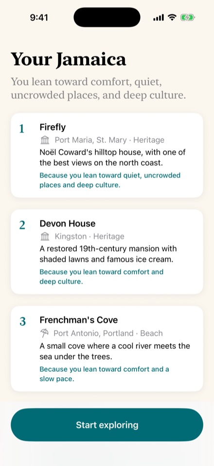
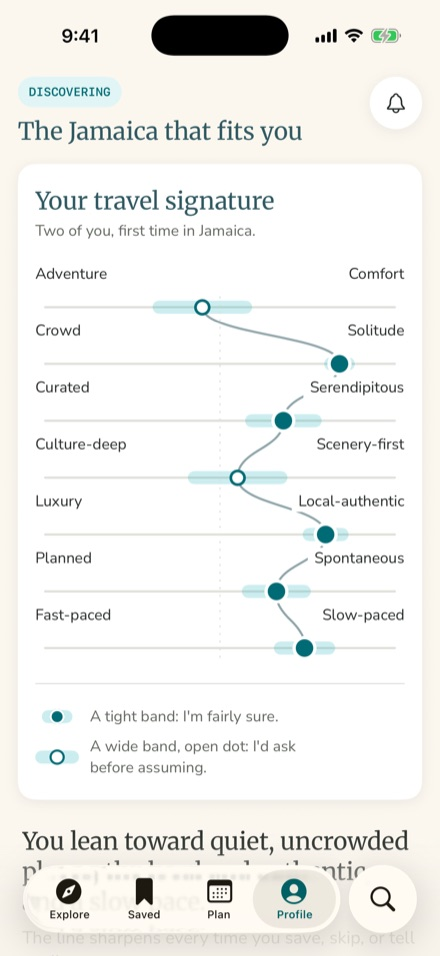

Known on every ship and every shore
Royal Caribbean and Sandals now share a guest. This is the app that knows that guest: who they are, where they are in the trip, and which vacation should come next, on water or on land. It starts with the Jamaica concept, and grows into a lifetime of vacations.
A cruise company and a resort company now share one guest
On September 23, Royal Caribbean Group agreed to take a 50 percent stake in Sandals and Beaches Resorts, for about $3 billion. A joint board led by Adam Stewart and Jason Liberty will govern the partnership, and the deal is expected to close in early 2027.
On one side: Royal Caribbean, Celebrity Cruises, and Silversea, private destinations like Perfect Day CocoCay and the Royal Beach Clubs, a new river cruise line, and Points Choice, which already lets a guest move loyalty points between Crown & Anchor Society, Captain's Club, and the Venetian Society. On the other: more than forty years of Caribbean all-inclusive hospitality, adults-only Sandals and family Beaches across the islands, Island Routes, and Sandals Select. Jamaica is home.
Read what both companies said that week, and three commitments stand out:
- Sandals stays Sandals. Beaches stays Beaches. The resorts will not become beach clubs for cruise passengers, and the point is not to sell cruisers day passes.
- Recognition, both ways. A Sandals guest on a Royal Caribbean ship should be recognized for their status, and a cruise guest at Sandals the same. Jason Liberty was candid that getting there will take new technology.
- A whole life of travel. The ambition, in Liberty's words, is to give guests "a lifetime of vacations," on water or on land.
The deal puts two of the most loyal customer bases in travel under one roof. What it doesn't have yet is the layer that knows one guest across both: who they are, what they loved, where they are in their trip, and what should come next. That is exactly what the Jamaica concept was built to do, and it already runs on a phone.
Deal details are from the companies' joint announcement of September 23, 2026, and executive interviews and analyst notes published that week.
One guest, one profile, every brand
The Jamaica concept rests on two engines: a Guest Profile, who you are, and a Journey State, where you are in the trip. Every screen, every message, and the navigation itself are drawn from those two things. Put the same engines under a company that owns ships, private islands, and all-inclusive resorts, and they stop describing one trip. They describe a life of them.
Open it the week you get engaged and it's a honeymoon planner that already knows you'd rather have a quiet cove than a swim-up bar. Open it on a ship in Falmouth and it has eight hours of Jamaica ready, built backwards from the all-aboard time. Open it at a Sandals and it knows about the shellfish allergy the ship's dining room learned, because you said it could. Open it two years later, when there's a toddler in the picture, and it suggests Beaches Negril or Perfect Day CocoCay, not another adults-only week.
That is the difference between two loyalty programs that have been connected and one company that actually knows its guest.
Design rule: the guest owns the profile. Nothing one brand learns reaches another without the guest's yes, and every piece of recognition can be seen and switched off. Recognition people choose feels like hospitality. Recognition they didn't choose feels like surveillance.
A new stream of guests on each side, and one relationship across both
Guests who met the islands from a ship and want to come back for a week. Cruise status recognized at check-in. And a better way to fill shoulder weeks: analysts noted that more than a dozen Sandals resorts sit within a half hour of ports Royal Caribbean calls at. The app can offer a quiet week, or two nights before a sailing, to exactly the guests whose profile fits, instead of discounting to everyone.
Couples and families who trust Sandals and have never considered a cruise, introduced by a brand they already love, at the moment their life says they're ready. Port days that feel personal instead of generic. And status that follows the guest ashore, so the relationship doesn't end at the gangway.
What both get
- Recognition that is real. Status, preferences, allergies, and the occasion being celebrated, known on every ship and at every resort from the moment the guest arrives. This is the technology the partnership said it would need.
- The right next vacation, not the next available one. The profile knows the life stage and the taste. A couple gets Sandals. A young family gets Beaches, or three nights to Perfect Day CocoCay. The big birthday gets Silversea. Cross-selling that feels like advice from someone who knows you.
- Travel advisors at the center. Advisors sell a great deal of both companies' vacations. With the guest's consent, the advisor sees what the app knows and gets credit for every booking the app inspires. The app should make an advisor better, never route around one.
- One view of the guest, for one board. What guests want, what they actually do, and what they loved, on ship and on shore. Insight that helps decide which ports matter, where the next Beaches goes, and what the next private destination should feel like.
How we'd measure it
Not downloads. The measures that matter to this partnership: guests who have taken both a ship and a resort vacation, time between vacations, repeat rate within and across brands, advisor-attributed bookings, and guest satisfaction where recognition was used against where it wasn't. We'd agree the targets together before launch.
The Jamaica engines, taught to sail
The engines already exist in a working iPhone prototype built for Jamaica: a one-minute interview, a profile with a confidence score on every dimension, seven journey states inferred on their own, and a feed, a trip, and a Today view that reshape around them. Here is what changes when they span water and land.


4.1 Guest Profile: one guest, many brands
In Jamaica the profile is built by a one-minute interview and sharpened by what a visitor does. Here it gets richer, faster, because a week at sea or at a resort says a great deal about a person. All of it with consent.
| Layer | New on water and land | Examples |
|---|---|---|
| Declared | The interview, plus the occasion and the party | Honeymoon, anniversary, a first trip with a baby, mobility, dietary needs |
| Observed | What they choose on board and at the resort | Spa over shore excursions, the late seating, the quiet end of the pool, the snorkel trip booked twice |
| Recognized | Status across every program | Sandals Select, Crown & Anchor Society, Captain's Club, Venetian Society |
| Life stage | Inferred, and always confirmed before it changes anything | Couple, young family, teenagers, empty nesters, three generations |
One set of axes for everything the partnership sells
The same seven taste axes that score a jerk pit in Boston Bay score a resort, a ship, an itinerary, and a shore excursion. That is what lets the app compare a Beaches week with a family sailing honestly, and explain the choice in one line.
One honeymoon couple. The same seven axes score every resort, ship, sailing, and shore experience, so the app can match them to any of them.
Accurate, not presumptuous
Every dimension carries a confidence score. Where the app is unsure, it asks. Where it is sure, it acts. Across brands this matters more, not less: nothing is more off-putting than a stranger who knows too much. The prototype already shows the guest exactly what it believes, and how sure it is.
4.2 Journey State: many trips, one guest
Jamaica has seven states, from Discovering to Between Trips. Here the trip itself gains three modes, and a single trip can chain them: two nights at a resort, then a week at sea with a port every other day.
Between Trips is where the partnership pays off. For a resort company alone, the quiet months after a trip are a wait for a repeat booking. For a company with ships and resorts, they are the moment to suggest the right next vacation, whichever kind it is.
New dials
| Dial | Starting value | What it controls |
|---|---|---|
| Port day buffer | 60 min | How early the app gets a guest back to the ship before all-aboard |
| Cross-brand quiet period | 21 days | How long after a trip before another brand may suggest itself |
| Contact budget | one per guest | A single ceiling across every brand, not one per brand |
Design rule: the all-aboard time is a hard constraint, like a booking. On a port day the app plans backwards from the ship. It never suggests a plan that makes a guest run for the gangway.
One couple, ten years, four brands
Meet Maya and Jordan. They're invented, but everything that happens to them uses a piece of the app described here.
The honeymoon
Their travel advisor books the honeymoon and sends the app along with the confirmation. The first time they open it, it asks for a minute: two photos at a time, who's coming, what made their last great trip great. The reveal is five things in and around Montego Bay, each with a reason. They lean toward quiet and slow, so it leads with the private island and a bamboo raft on the Martha Brae, not the swim-up bar.
On the resort the app changes character. Today leads with what's next. When rain rolls in on day four, it rebuilds the day around the spa and a cooking class, and keeps the catamaran they booked for Thursday, because a booking is a fact, not a suggestion. Beyond the gate, Island Routes and the island's own operators fill the map, each scored against what these two actually like.
The first sailing
They had never considered a cruise, and the app never pushed one. Two years on, when they start browsing dates again, it notices the pattern (autumn, a week, somewhere new) and offers something they hadn't thought of: two nights at a Sandals in Barbados, then seven nights on a Royal Caribbean ship sailing the southern Caribbean from Bridgetown. One trip, two brands, one itinerary.
On board, nobody asks them to start over. Their Sandals status is recognized at the gangway, and the dining room already knows about Jordan's shellfish allergy, because they said it could. In every port the app builds the day backwards from the all-aboard time, and each evening it asks one small question that makes the next day better.
The family years
When they add a toddler to their party, the app changes more than its suggestions. Adults-only resorts quietly step back from Explore. Beaches Negril and a three-night sailing to Perfect Day CocoCay step forward, each with a reason: "Because you'd rather have a shallow beach than a waterpark line, and you still like a slow pace." Life stage decides what they see, not which brand has rooms to fill.
The big birthday
Jordan turns forty. The profile, eight years deep, says small crowds, deep culture, no rush. The app suggests Silversea for the first time, and says why in one line. The reason line is the whole pitch.
Ten years
"Ten years ago today, you were in Montego Bay." The app says it once, in the right week. Then it shows them the private island at Sandals Caribbean Cay, a few minutes up the coast from where it all started. At check-in they are recognized at the door: the status, the room they like, the table they always ask for. It is the same guest the app met in 2027. It never had to ask twice.
A Royal Caribbean family, first time in Jamaica, has eight hours in Falmouth. The app knows they lean toward adventure and local food, so it builds a morning on the Martha Brae and a jerk lunch, and gets them back on board with an hour to spare. Nobody sends them to a resort pool for the afternoon. Three weeks later, in Between Trips, the app remembers the river, and suggests a summer week at Beaches Negril.
The port day was the trailer. The week at Beaches is the film.
The app changes shape at home, at the resort, at sea, and in port
In Jamaica the tab bar is drawn from the journey state. Here it is also drawn from where the guest is standing. Four tabs for each mode, with Search on every bar.
Ashore leads with a countdown to all-aboard and the next stop of the day. Island is everything beyond the resort gate. Next is the lifetime planner: the vacation that fits the life they're living now.
Every brand keeps its face
A Beaches trip wears Beaches' look and voice. A Silversea voyage wears Silversea's. The guest never feels handed from one company to another, and no brand has to become another brand's feature. The engines underneath are shared; the faces are each brand's own. That is how Sandals stays Sandals in software.
Carried over from Jamaica
- Every recommendation explains itself, and tapping the reason lets the guest correct the profile.
- States are sticky, transitions are gentle. When the mode changes, the app says so once, warmly, and offers the new mode. It never rearranges itself silently.
- Never an empty screen. Give dates, get a whole trip back. Editing a draft beats starting from nothing.
- Useful without the profile. Refused permissions, a ship with no signal, a guest who never did the interview: every screen still works.
Every island, as the guest would want to see it
An all-inclusive can keep guests on property. The best trips don't stay there, and neither do the best port days.
Island Routes, Sandals' own excursion company, already runs tours across the Caribbean. Add the islands' own operators, kitchens, and guides through a partner portal, the Jamaica Connect idea carried to every island, and every place Sandals and the ships touch gets a living, approved map of what's worth doing.
- One map, two kinds of guest. The same listing serves a resort guest with a free afternoon and a cruise guest with eight hours. Both see it scored against their own profile, with travel time and the all-aboard clock taken into account.
- Partners own their data. Sandals approves what goes live. An edit never takes a live listing down, and a reviewer sees only what changed.
- Structured answers, not adjectives. Partners describe intensity, group size, indoors or outdoors, and who it suits. That maps onto the same seven axes, so the recommender learns something real.
- More of the island, per guest. The operators who fit a guest get found by that guest, and the money a trip brings reaches further than the resort gate and the pier.
One engine underneath, every brand's voice on top
The Recognition bridge is the first thing to build. It is small, it is what the partnership promised guests, and it proves the idea: a Sandals Select member walks up a gangway and is known. Everything else grows from there.
What it takes, named up front
- Consent first, and visible. Nothing moves between brands without the guest's yes, and nothing moves between the companies before the deal closes and the right agreements are in place. The prototype runs on invented guests.
- Protect what makes Sandals, Sandals. Port-day features point guests to the island, not to the resort pool. Resorts stay for resort guests. The ship's job is to make people want to come back for a week.
- Keep advisors whole. Attribution for every booking the app inspires, and a view of the client the advisor can use. If advisors see the app as competition, it fails.
- One contact budget across every brand. Five brands that each want one guest's attention is the fastest way to be muted. The contact governor from the Jamaica concept becomes a single budget per guest, shared by everyone.
- Integration is the real work. Loyalty, reservations, and ship and resort systems on both sides. Start thin: status recognition first, preferences next, the full profile last.
- Agree on success early. Guests who take both kinds of vacation, time between vacations, repeat rate, advisor bookings. Not downloads.
A prototype before the deal closes, recognition right after
- Now to close: the prototypeExtend the working Jamaica prototype to a Sandals guest in Jamaica, timed to the reopening of Sandals Montego Bay and Sandals Caribbean Cay on December 18: the resort's Today view, the island beyond the gate, a Falmouth port day built around all-aboard, and a Between Trips screen that offers the next vacation across brands. Invented guests only.
- At close: recognitionConsented status recognition between Sandals Select and the Royal Caribbean Group programs. The smallest thing that proves the partnership to a guest.
- Phase 1: the Sandals and Beaches appJamaica first, then every island. The interview and profile, Today and re-plan, the trip recap, and the island partners.
- Phase 2: water and landStay-and-sail planning, port days, the lifetime planner in Between Trips, the advisor view, and recognition inside the cruise brands' apps.